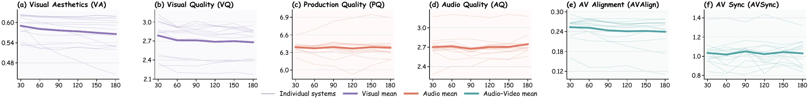
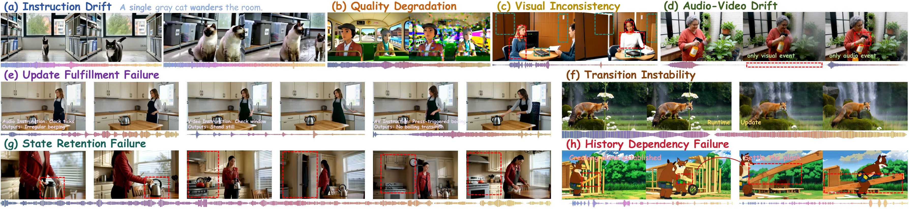

Time changes quality
Visual fidelity, audio quality, instruction adherence, and cross-modal alignment may drift as generation continues.
A Comprehensive Benchmark for
Streaming Audio-Video Generation
Streaming generation
needs streaming evaluation.
1BAAI 2PKU 3Kling 4THU 5USTC

The evaluation gap
Streaming systems extend an already committed world while users intervene in real time. Evaluating only the completed output misses the failures that happen along the way.
Visual fidelity, audio quality, instruction adherence, and cross-modal alignment may drift as generation continues.
A model must realize each runtime instruction without erasing unrelated subjects, environments, or sounds.
Later instructions can depend on states established many chunks earlier, demanding active state reuse rather than passive continuity.
Two complementary tracks
Both tracks generate 180 seconds of synchronized content, but expose different failure modes.
A single global prompt drives continuous generation. We inspect six non-overlapping intervals to reveal drift, degradation, and long-horizon consistency.
An initial world is modified every 30 seconds. Updates vary by interaction type, modality, and dependency on earlier events.
Benchmark construction
Taxonomy-driven allocation balances content and difficulty. Every prompt and checklist is independently reviewed by two experts, with disagreements resolved by an adjudicator.

Evaluation framework
Expert models, multimodal judges, deterministic detectors, and case-specific checklists provide complementary evidence.
Visual and audio quality, cross-modal semantics, synchronization, and practical streaming efficiency.
Instruction drift, quality degradation, subject and background consistency, and audio-video drift.
Update fulfillment, target achievement and latency, transition stability, retention, and history dependency.

What the benchmark reveals
No evaluated system simultaneously achieves persistent visual quality, strong audio, tight synchronization, and reliable interaction.
High absolute quality can coexist with substantial temporal drift. Quality and its evolution must be measured together.
Models that realize successful updates early may still fail on most instructions. Achievement rate and latency tell different stories.
Systems retain visible and audible states more reliably than they actively invoke earlier information in later interactions.


Abstract
Recent advances are pushing video generation toward unbounded streaming audio-video for real-time interactive worlds. Existing benchmarks, however, primarily evaluate completed sequences. StreamAV-Bench bridges this gap with a progressive track for instruction adherence and long-horizon stability, and an interactive track for update response, state retention, and history dependency. Across 320 expert-verified scenarios, 33 fine-grained metrics, and 13 representative systems, the benchmark reveals temporal drift, limited update success, and slow target realization as central obstacles to dependable streaming generation.
Citation
If this benchmark supports your research, please cite the paper.
@misc{liu2027streamavbench,
title = {StreamAV-Bench: A Comprehensive Benchmark
for Streaming Audio-Video Generation},
author = {Liu, Kaiqi and Zeng, Haoxuan and Liu, Jingqi
and Fang, Jiacong and Cai, Ziqi and Mao, Yunyao
and Liu, Henglin and Sheng, Yu and Weng, Shuchen
and Shi, Boxin},
year = {2027},
note = {Under review}
}